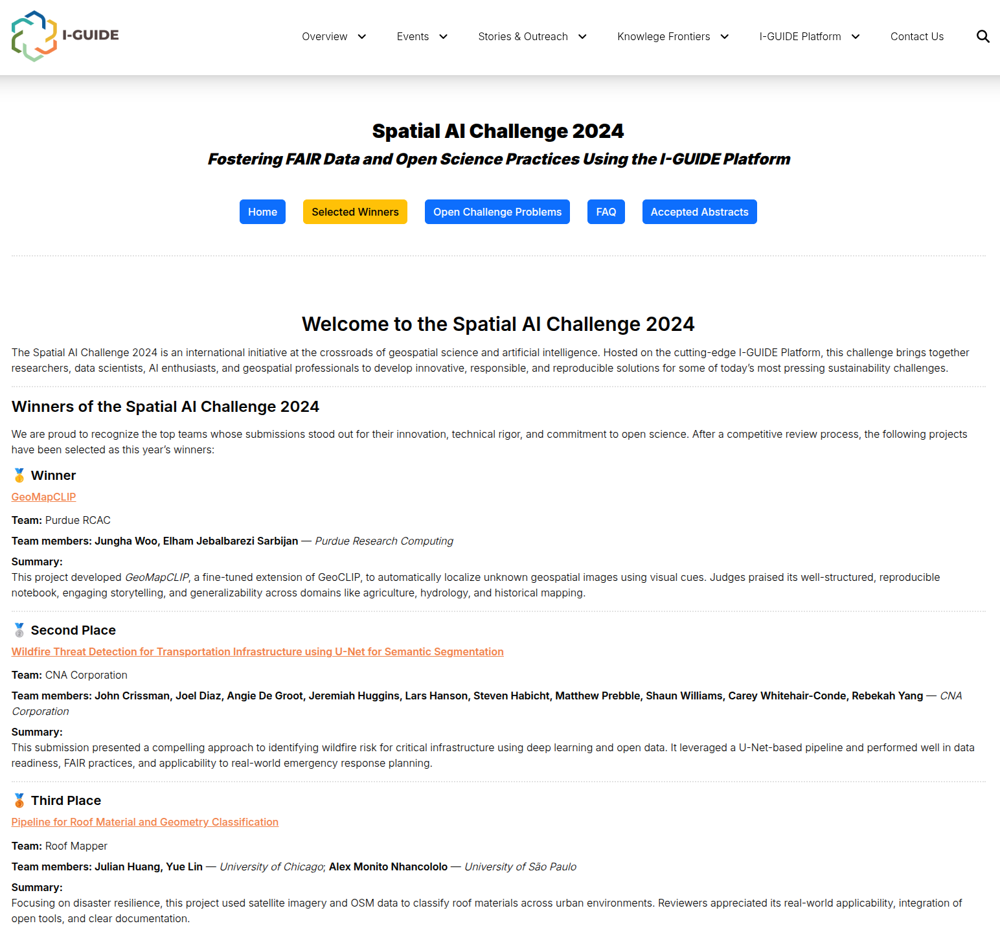
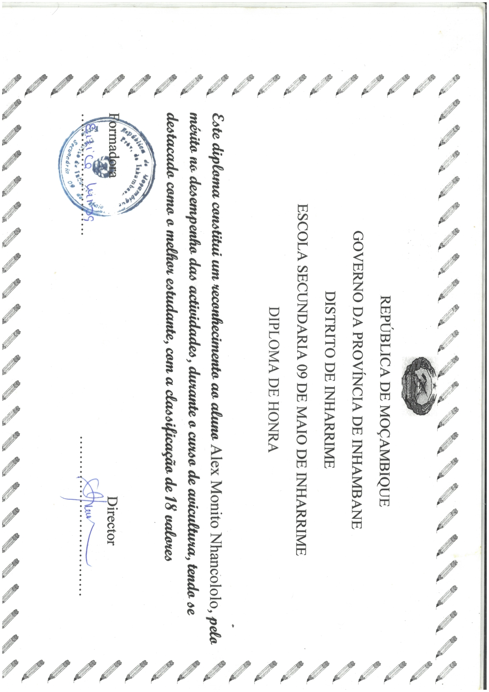

About Me

Alex Monito Nhancololo
Ph.D. student in Statistics and Probability
A. M. Nhancololo is a Ph.D. student in Statistics and Probability at the Institute of Mathematics, Statistics and Computer Science, University of São Paulo (IME–USP). He holds an M.Sc. in Statistics and Agricultural Experimentation from the Federal University of Lavras (UFLA), where he received the Best Thesis Award (2024), and a Bachelor of Education in Mathematics with a specialization in Statistics from Universidade Save (Mozambique). He is also pursuing an M.Sc. in Financial Engineering at WorldQuant University and an MBA in Artificial Intelligence and Big Data at the Institute of Mathematical and Computer Sciences, University of São Paulo (ICMC–USP). He was awarded third place in the Spatial AI Challenge 2024 (I-GUIDE), together with Julian Huang and Yue Lin (University of Chicago). His primary research interests lie in spatio-temporal statistics and their applications to the social sciences, environmental studies, ecology, agriculture, and medicine. Methodologically, his work focuses on geospatial intelligence (GeoAI), machine learning, natural language processing, and deep learning, alongside spatial point processes, lattice/area data, geostatistics, and time-series analysis.
Honors & Awards
🥉 Spatial AI Challenge 2024
Awarded third place in the Spatial AI Challenge 2024 (I-GUIDE), together with Julian Huang and Yue Lin (University of Chicago).

🥇 2024 Best Master’s Thesis Award in Statistics
Award for the Best Master’s Thesis in Statistics, defended in 2024
Advisor: Prof. João Domingos Scalon
Foundations of Financial Engineering
Foundations of Financial Engineering (FFE) Certificate, distinction (\(\geq 80\%\) average).
Applied linear algebra and Python for filtering, summarizing, and transforming structured and unstructured financial data
Prepared datasets for econometrics, machine learning, and deep learning models
Conducted quantitative analysis of financial risks including credit risk, volatility, and liquidity

Poultry Production
Outstanding Student in the Poultry Production Course
